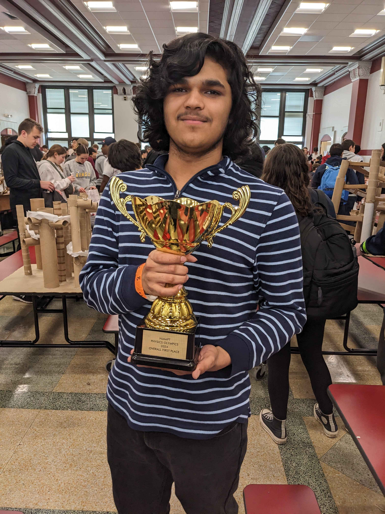
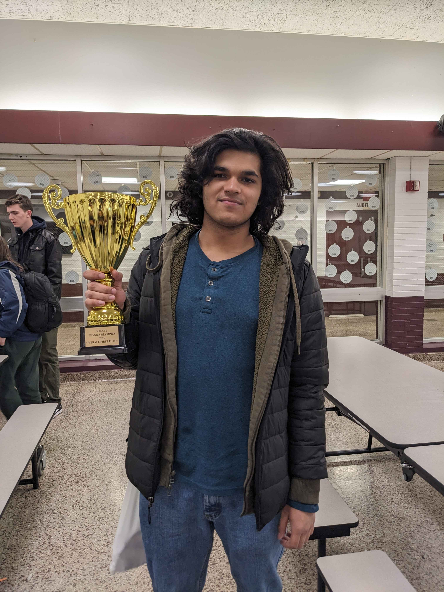

NJ Physics Olympics
Two-time First Place winner at the New Jersey Physics Olympics, hosted by the New Jersey Association of American Physics Teachers (NJAAPT).
Overview
The New Jersey Physics Olympics is an annual competition hosted by NJAAPT that brings together high school teams from across North Jersey. Teams compete in a series of hands-on experimental physics challenges that test creativity, problem-solving ability, teamwork, and practical understanding of physics principles — often with minimal pre-announced constraints on equipment or approach.
I was selected to compete as part of the Chatham High School team, earning first place in both the 2023 and 2024 competitions.
Results
What the Competition Involves
Unlike written physics exams, the Olympics tests applied and experimental physics. Events typically include building devices, making precise measurements, predicting outcomes, and demonstrating physical intuition under time pressure. Some representative challenge types:
- Device-building events (e.g., projectile launchers, balancing structures)
- Experimental measurement and data analysis
- Prediction events requiring quantitative estimation
- Team collaboration under competition conditions
Skills Demonstrated
- Rapid experimental design and prototype testing
- Quantitative reasoning and error analysis
- Effective teamwork and communication under pressure
Hosted By
The NJ Physics Olympics is organized by the New Jersey Association of American Physics Teachers (NJAAPT), an affiliate of the American Association of Physics Teachers (AAPT). The competition draws teams from high schools throughout North Jersey.
Photos

